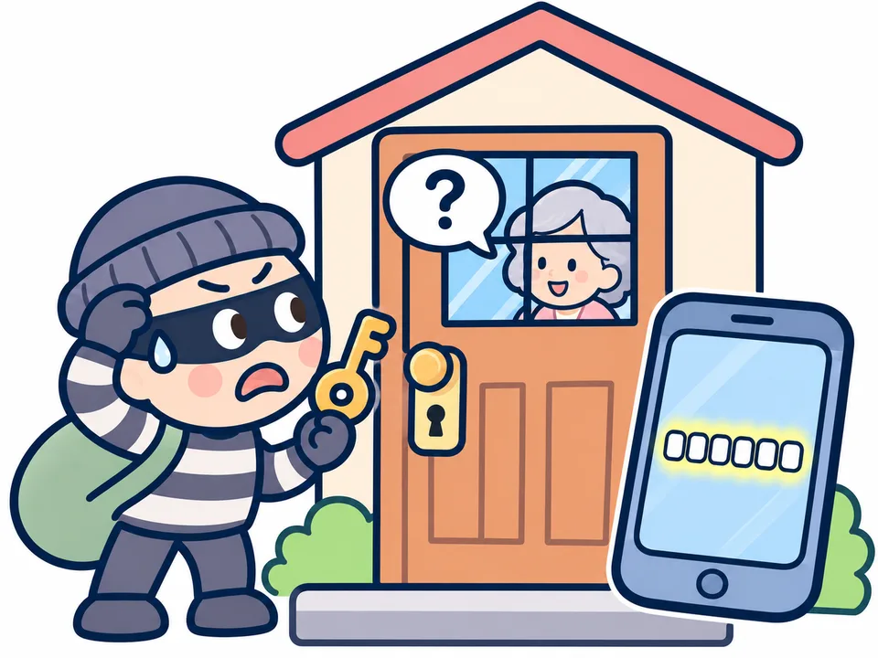
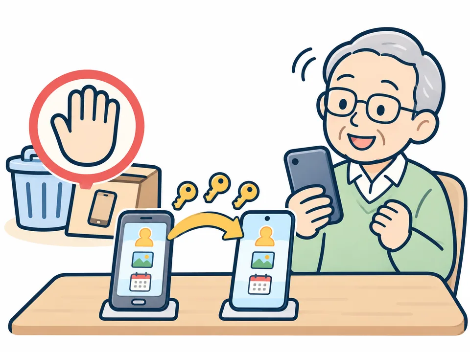
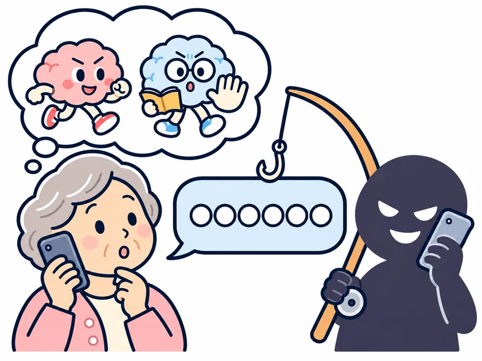

2段階認証のやり方
パスワードが盗まれても、乗っ取られにくくする設定です。認証アプリの画面の見本を使って、設定のしかたと実際の使い方を説明します。
2段階認証って何？
2段階認証は、パスワードのほかに「その場で変わる合言葉」も確かめる仕組みです。パスワードが盗まれても、合言葉がなければ他人はログインできません。
たとえるなら、パスワードは家の鍵、確認コードは毎回変わる合言葉です。鍵を拾った人がいても、ドアの向こうで「今日の合言葉は？」と聞かれたら、答えられずに入れません。

この合言葉は、あなたのスマホにだけ届きます（または、スマホのアプリにだけ表示されます）。だから「パスワード」と「あなたのスマホ」の両方がそろわないと、ログインできないわけです。
合言葉の受け取り方は3種類ある
いちばん強いのはパスキーです。認証アプリとSMSは、残念ながら「偽サイトに自分で打ち込んでしまう」と破られます。
| 方式 | しくみ | 偽サイトに強いか |
|---|---|---|
| パスキー | スマホの顔認証や指紋でログイン。数字を打たない | 強い。偽サイトではそもそも動かない |
| 認証アプリ | アプリに30秒ごとに変わる6桁が出る | 弱い。偽サイトに打つと、その場で使われる |
| SMSのコード | ショートメッセージに6桁が届く | 弱い。認証アプリと同じ |
用語集にもある「リアルタイムフィッシング」は、偽サイトに打ち込まれたパスワードと6桁を、その瞬間に本物のサイトへ渡してログインします。2025年に証券口座の乗っ取りが相次いだのも、この手口でした。そのため日本証券業協会は、ログインなどで「フィッシングに耐性のある多要素認証（パスキー）」を必須にする方針を出しています。
それでも認証アプリやSMSには、設定する価値が十分あります。どこかで漏れたパスワードを使った乗っ取り（リスト型攻撃）は、これでほぼ止まるからです。パスキーに対応しているサービスはパスキー、対応していないものは認証アプリ、という順で選ぶのがおすすめです。
認証アプリがSMSより使いやすいのは、電波がない場所や海外でも数字が出ることと、SMSが届かない、遅れるという困りごとがないことです。
認証アプリの設定のしかた
やることは5つで、どのサービスでも流れは同じです。画面の位置や言葉はサービスごとに少しずつ違います。
- 認証アプリを入れる。iPhoneは「App Store」、Androidは「Google Play」から。「Google Authenticator」「Microsoft Authenticator」などがあり、どれでも同じように使えます。似た名前の別のアプリもあるので、提供元が Google LLC、Microsoft Corporation であることを確かめてください
- サービスの「セキュリティ設定」を開く。公式アプリかブックマークから入り、「2段階認証」「認証アプリを使う」などを選ぶと、四角い模様（QRコード）が出ます
- 認証アプリの「＋」を押して、QRコードを読み取る。パソコンの画面のQRコードを、スマホのカメラで写す感じです。スマホ1台で設定するときは、QRコードの下の「キーを入力」などで、英数字の列をコピーして貼り付けます
- アプリに出た6桁を、サービスの画面に打つ。「登録しました」と出れば設定完了です
- バックアップコードを紙に書いてしまう。設定の最後に出ることが多い、予備の合言葉です。スマホをなくした、壊れたときに、これがないと自分もログインできなくなります。スマホの中ではなく、紙で持っておくのがいちばん安全です
○○ショップ（サイト側）
認証アプリを登録
アプリでこのコードを
読み取ってください
認証アプリ（例）
○○ショップ（ログイン）
確認コードを入力
この数字は人に教えない
メールのリンク先に打たない
画面は、どこのアプリでもない見本です。実際の画面は、アプリやサービスによって少しずつ違います。
実際に使うとき
ログインのたびにやることは、「アプリを開いて、今出ている6桁を打つ」だけです。
- いつもどおり、IDとパスワードを入れる
- 「確認コードを入力してください」と出たら、認証アプリを開く
- そのサービスの名前の下にある6桁を打つ
数字の横の円は、残り時間です。円が欠けてなくなると、30秒ごとに新しい数字に変わります。円が小さいときは、次の数字に変わるのを待ってから打つと、打っている途中で無効になりません。
認証アプリはインターネットにつながっていなくても、時計だけで数字を作っています。飛行機モードでも使えます。
機種変更のときは、古いスマホを最後まで初期化しない
認証アプリの中身は、他のアプリのようには自動で引っ越ししないことがあります。ここでつまずく人がいちばん多いです。

Google Authenticatorの場合、引っ越しの方法は2つあります。
- Googleアカウントに同期している場合：新しいスマホでアプリを入れ、同じGoogleアカウントでログインすれば、数字の一覧が戻ります
- 同期していない場合：古いスマホのアプリで「アカウントを移行」のQRコードを出し、新しいスマホのアプリで読み取ります
同期しているかは、アプリの右上の雲のマークで分かります。雲に斜め線が入っていたら、同期していません。
マークの形や色は、アプリの版によって少し違うことがあります。
どちらの場合も、守ってほしいことは1つです。新しいスマホで、全部のサービスにログインできるのを確かめるまで、古いスマホを初期化したり下取りに出したりしない。古いスマホが手元にあれば、失敗してもやり直せます。
もし古いスマホを先に手放してしまったら、設定のときに紙に書いたバックアップコードでログインし、認証アプリを設定し直します。Microsoft Authenticatorなど別のアプリは、それぞれの公式の案内に従ってください。
主なサービスの公式の設定ページ
詳しい手順は、各社の公式の案内を見てください。画面が変わっても、公式のページは最新になっています。
- Google：2 段階認証プロセスを有効にする
- Apple（iPhone）：Apple Accountの2ファクタ認証
- Microsoft：Microsoft アカウントで 2 段階認証を使用する方法
- Amazon：2段階認証を有効にする（Amazon.co.jp ヘルプ）
「そのコードを教えて」は詐欺
確認コードは、自分がログインするその瞬間に、自分で開いた画面にだけ打つものです。それ以外で聞かれたら、相手がだれを名乗っていても詐欺です。

- 電話やSMSで「届いた番号を読み上げてください」と言われた
- メールのリンクから開いた画面で「確認コードを入力」と出た
- 友だちから「間違えてそっちにコードが行ったから教えて」と連絡が来た
3つめは、友だちのアカウントがすでに乗っ取られていて、次はあなたのアカウントを狙っているときの手口です。そのコードは、あなたのアカウントを開ける合言葉です。